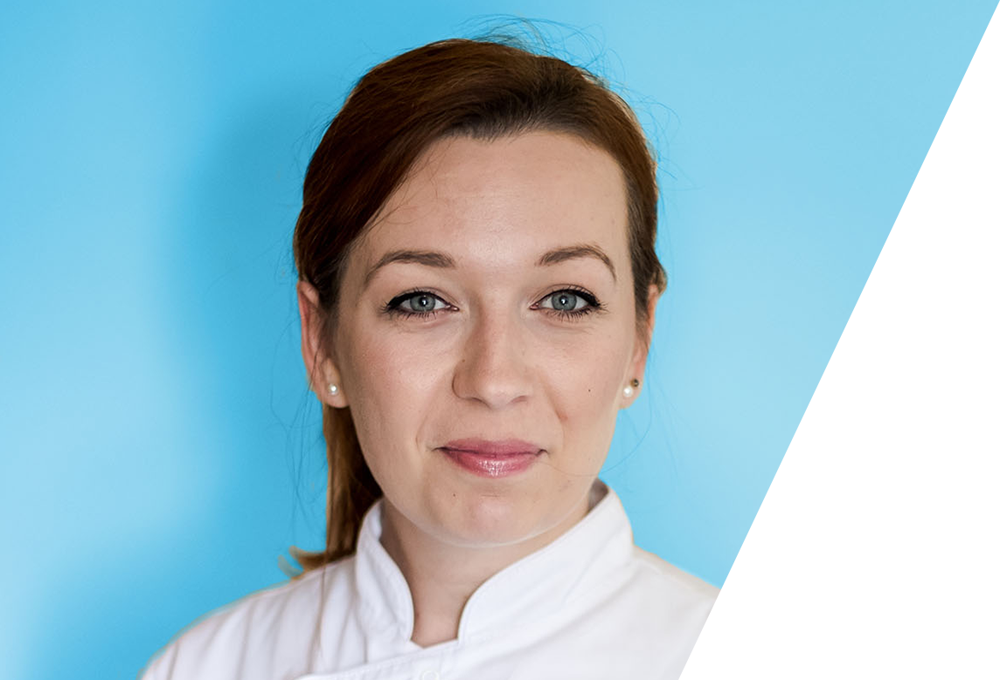

Mam to szczęście, że moja praca
jest moją pasją, którą odkryłam
zupełnie przypadkowo. Od kilku lat
moim szczególnym zainteresowaniem
stała się podologia.
Przygotowanie zawodowe rozpoczęłam od nauki
w policealnej szkole w Krakowie na kierunku
technik usług kosmetycznych, później kolejno wizaż
i stylizacja paznokci, studia na kierunku
kosmetologia, które ukończyłam w Katowicach, liczne
szkolenia pod okiem najlepszych specjalistów do spraw
podologii, oraz studia podyplomowe w Krakowie na
kierunku podologia. Częste udziały w konferencjach i
sympozjach pozwalają mi wciąż podnosić swoje kwalifikacje.
Moja edukacja na pewno jeszcze się nie zakończyła,
ciągle mam coś w planach.